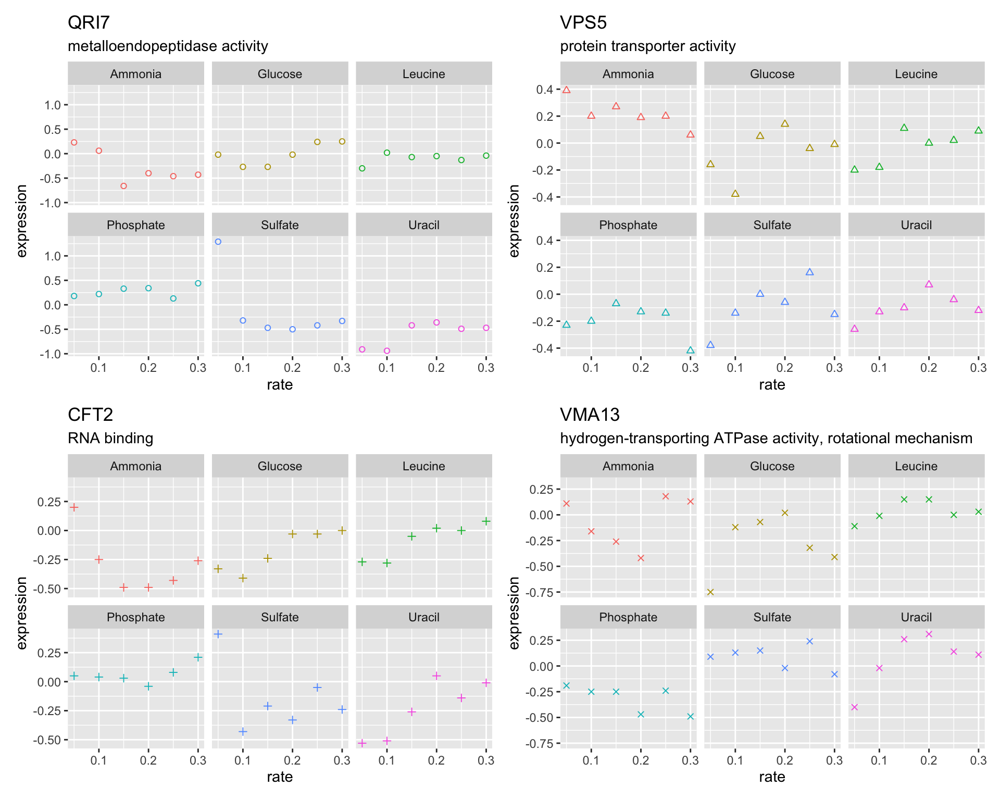
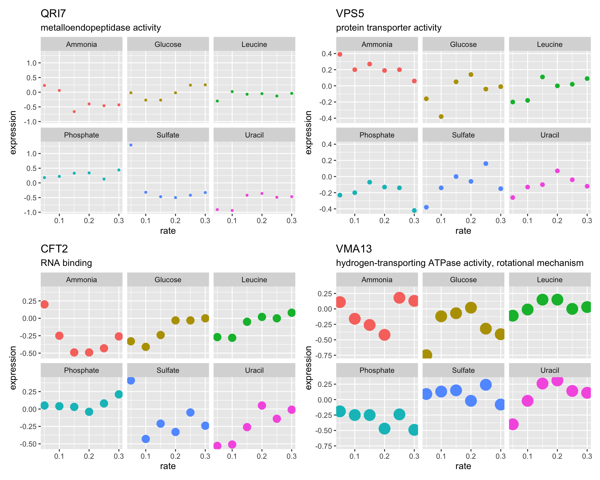
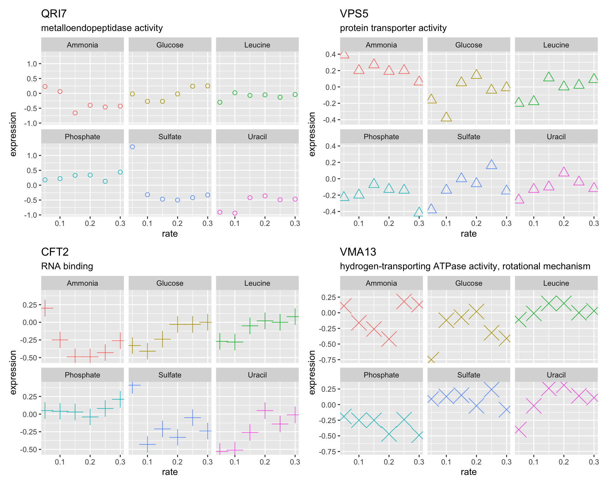

The Rmarkdown for this class is on github
# conditionally download all of the files used in rmarkdown from github
source("https://github.com/rnabioco/bmsc-7810-pbda/raw/main/_posts/2022-12-05-class-10-programming-in-r-part-1/download-files.R")Introduction
As discussed in the previous class, you should try to limit duplication in your code. One way to do this is by writing functions, another way is through iteration. Reducing code duplication has several benefits:
- Your code easier to read
- You reduce the chance of mistakes from repeated copying and pasting
- It is easier to adapt your code for different requirements
for loops
for loops allow you to run the same code block repeatedly without copying and pasting.
When iterating over a vector, usually it is most useful to iterate over the index of each element (aka the position in the vector), rather than the values themselves.
We will generally want to store the output generated in the for loop. A common paradigm is
to preallocate a place to store the output. This is a faster approach than growing the output at each iteration (for more detail see this R-bloggers post).
We can generate vectors (and lists) of a given type and length using the vector() function.
n <- length(values)
# make an empty vector of same length as values (4)
output <- vector(mode = "character", length = n)
output#> [1] "" "" "" ""
for(i in 1:n){
# get value at position i
val <- values[i]
# assign value to output character vector at position i
output[i] <- tolower(val)
}
output#> [1] "a" "b" "c" "d"Lets use rnorm() to create a list of 5 vectors with different values for ‘mean’
# One way to do this is by copying and pasting
vec_in <- c(1, 50, 20, 5, 70) # input
out <- vector("list", length(vec_in)) # output
out[[1]] <- rnorm(n = 10, mean = vec_in[1])
out[[2]] <- rnorm(n = 10, mean = vec_in[2])
out[[3]] <- rnorm(n = 10, mean = vec_in[3])
out[[4]] <- rnorm(n = 10, mean = vec_in[4])
out[[5]] <- rnorm(n = 10, mean = vec_in[5])
out#> [[1]]
#> [1] 3.5913549 1.8340890 -0.7889661 1.9082110 -0.1497324 1.1488104
#> [7] 1.9401307 0.3162172 1.5737649 1.2085159
#>
#> [[2]]
#> [1] 48.38933 50.55039 50.03170 49.11209 49.61926 51.76141 49.76171
#> [8] 48.32629 49.64353 49.79534
#>
#> [[3]]
#> [1] 18.53100 19.22863 20.04411 20.53754 18.88863 21.50435 21.04538
#> [8] 18.85684 20.32217 21.91618
#>
#> [[4]]
#> [1] 4.012299 4.979078 4.326385 3.698792 5.000586 5.650838 5.202855
#> [8] 4.930908 5.698622 3.871143
#>
#> [[5]]
#> [1] 69.23056 68.92921 69.55208 69.66450 70.06718 70.45532 69.59658
#> [8] 71.21905 69.56476 69.51142Write a for loop that uses rnorm() to create 3 vectors of different lengths. Store the vectors in a list. Use mean = 0 and sd = 1 (the default).
vec_in <- c(5, 10, 2) # input
out <- vector("list", ???) # output
for (i in ???) { # sequence
??? # body
}
outSo far we have used 1:length(x) to specify the sequence to iterate over. A better alternative is usingseq_along(x) instead of 1:length(x) . This guards against errors when an empty vector is passed to 1:length(x).
Using the Brauer data
Using the Brauer gene expression data lets create a figure showing the growth rate vs expression for four genes
brauer_gene_exp <- read_csv("data/brauer_gene_exp.csv.gz")# This is the function we wrote in class-6
plot_expr <- function(input, sys_name, ...) {
gg_data <- input %>%
filter(systematic_name == sys_name)
plot_title <- gg_data$name[1]
plot_sub <- gg_data$MF[1]
gg_data %>%
ggplot(aes(rate, expression, color = nutrient)) +
geom_point(...) +
labs(title = plot_title, subtitle = plot_sub) +
facet_wrap(~ nutrient) +
theme(legend.position = "none")
}Lets try this with the copy-and-paste method, storing the plots in a list.
vec_in <- c("YDL104C", "YLR115W", "YMR183C", "YML017W") # input
out <- vector("list", length(vec_in)) # output
out[[1]] <- plot_expr(brauer_gene_exp, sys_name = vec_in[1])
out[[2]] <- plot_expr(brauer_gene_exp, sys_name = vec_in[2])
out[[3]] <- plot_expr(brauer_gene_exp, sys_name = vec_in[3])
out[[4]] <- plot_expr(brauer_gene_exp, sys_name = vec_in[4])
wrap_plots(out)
Re-write the code from above using a for loop to generate our figure
vec_in <- c("YDL104C", "YLR115W", "YMR183C", "YML017W") # input
out <- vector("list", length(vec_in)) # output
for ( ???? ) { # sequence
# body
}
wrap_plots(out)A note on vectorization
In general you should try to use a vectorized function/approach before using iteration. Vectorized approaches will be faster and require less code to run. If you are working with a vector or matrix, then there is likely a vectorized operation that can be used.
There are however a few common places that iteration is used:
- To process multiple datasets/data.frames. (e.g. apply a function to a list of data.frames)
- plotting (e.g. make many plots with a varying input parameter or aesthetic)
- perform a custom operation that does not have a vectorized approach
Introduction to the apply familar of functions.
for loops are a powerful tool to reduce code duplication, however your code can be simplified using the lapply function and related apply functions in base R. These functions essentially run for (i in seq_along(x)) behind the scenes so you don’t have to explicitly type this.
There is a function for each type of output:
lapply()iterate over a vector, applying a function, returning a list
sapply()iterate over a vector, applying a function, coercing the output to a vector
apply()iterate over a row, column, or all elements of a matrix
mapply()iterate over each element of multiple supplied vectors
The lapply function requires two inputs: lapply(X, FUN, ...)
Xis a list or atomic vectorFUNis a function- … additional arguments to FUN
# We previously used a for loop to create vectors with different values for mean
vals <- c(1, 50, 20, 5, 70) # input
out <- vector("list", length(vals)) # output
for (i in seq_along(vals)) { # sequence
out[[i]] <- rnorm(n = 10, mean = vals[i]) # body
}
# Using lapply() we can further simplify this code
# x indicates where each element of the vector should be inserted
# this is an example of an anonymous function
out <- lapply(vals, function(x) rnorm(n = 10, mean = x))
# we can also define the function first
rnorm_custom <- function(x){
rnorm(n = 10, mean = x)
}
out <- lapply(vals, rnorm_custom)
# You can use brackets to include a multi-line code block
out <- map(vals, function(x) {
rnorm(n = 10, mean = x)
})
# Each element of the vector is passed to the first available argument
out <- lapply(vals, rnorm, n = 10)Use rnorm() and lapply() to create 3 vectors of different lengths
out <- lapply( ???)
outlapply() to generate our growth rate figure
genes <- c("YDL104C", "YOR069W", "YLR115W", "YPR036W")
expr_plots <- lapply(
????
)
wrap_plots(expr_plots)Note that we can iterate over lists in addition to vectors. A common operation might be to read in multiple files and perform some operation
# get paths to files in "data" directory (dir() is an alias for list.files())
file_names <- dir("data", full.names = TRUE)
# read each file into R and store in a list
lst_of_dfs <- lapply(file_names, read_csv)
# get nrow of each file
lapply(lst_of_dfs, nrow)
# select 5 random rows
lapply(lst_of_dfs, slice_sample, n = 5)
# check is any NAs are present
lapply(lst_of_dfs, function(x){
sum(is.na(x)) > 0
})Note that a data.frame is a list in R, such that each column is one element of a list (e.g. see output of typeof(mtcars)). So if we use lapply() on a data.frame it will iterate over each column.
lapply(mtcars, mean)#> $mpg
#> [1] 20.09062
#>
#> $cyl
#> [1] 6.1875
#>
#> $disp
#> [1] 230.7219
#>
#> $hp
#> [1] 146.6875
#>
#> $drat
#> [1] 3.596563
#>
#> $wt
#> [1] 3.21725
#>
#> $qsec
#> [1] 17.84875
#>
#> $vs
#> [1] 0.4375
#>
#> $am
#> [1] 0.40625
#>
#> $gear
#> [1] 3.6875
#>
#> $carb
#> [1] 2.8125lapply(mtcars, class)#> $mpg
#> [1] "numeric"
#>
#> $cyl
#> [1] "numeric"
#>
#> $disp
#> [1] "numeric"
#>
#> $hp
#> [1] "numeric"
#>
#> $drat
#> [1] "numeric"
#>
#> $wt
#> [1] "numeric"
#>
#> $qsec
#> [1] "numeric"
#>
#> $vs
#> [1] "numeric"
#>
#> $am
#> [1] "numeric"
#>
#> $gear
#> [1] "numeric"
#>
#> $carb
#> [1] "numeric"sapply() will coerce the output to be a vector rather than a list.
sapply(mtcars, mean)#> mpg cyl disp hp drat wt
#> 20.090625 6.187500 230.721875 146.687500 3.596563 3.217250
#> qsec vs am gear carb
#> 17.848750 0.437500 0.406250 3.687500 2.812500iterating over matrices
The apply() function allows you to iterates over a row, column, or all elements of a matrix.
mat <- matrix(rnorm(100),
nrow = 10,
dimnames = list(paste0("row_", letters[1:10]),
paste0("column_", letters[11:20])))
mat#> column_k column_l column_m column_n column_o
#> row_a 0.98588154 0.17986402 0.8782321 -0.3197453 -0.19607985
#> row_b 1.60286681 1.33682281 0.7030675 0.5574282 1.29800036
#> row_c -0.03335279 0.03406379 -0.9557466 0.3616159 -0.51378000
#> row_d 1.00330510 1.03099231 0.2297673 0.1830542 0.06850838
#> row_e -0.86768826 -1.21164204 -0.7623035 0.3524732 -0.87078712
#> row_f 0.48767173 -1.30254979 -0.6607877 2.1896964 0.08748180
#> row_g -0.44703811 -0.54214849 -1.2138610 1.2917623 1.61174048
#> row_h -0.76052724 0.30345597 2.4315877 2.6637962 0.45203511
#> row_i -0.61395386 -3.24787881 -0.8692908 -0.8348106 0.63569660
#> row_j 2.21292264 0.81424882 -1.4602160 -1.5987837 0.90549231
#> column_p column_q column_r column_s column_t
#> row_a -1.07831662 1.1597986 0.10751126 1.2585520 -1.0558901
#> row_b 0.72474252 -1.9832921 0.74818230 0.3851958 -1.3666461
#> row_c 1.19234654 -1.3855583 0.09708507 -2.0338914 -0.9170206
#> row_d 0.24255454 0.8646676 0.05264965 0.3057289 0.1927647
#> row_e 0.68008006 0.8361785 1.58712155 -1.8739297 1.8252621
#> row_f -0.04239721 -0.3117891 -0.41057661 0.5404438 0.5201511
#> row_g -2.21197608 -3.4194882 -0.06614892 -0.3139633 -1.7528013
#> row_h -0.52526585 -0.1720597 -0.18533350 1.2768700 -0.4023814
#> row_i 0.04899771 -0.1097765 -1.12529175 -0.1511120 -0.3327507
#> row_j 2.07524719 1.0901230 -1.10115013 -0.2632451 -0.6139464The arguments are:
apply(X, MARGIN, FUN, ...)
X = matrix
MARGIN = specify how to iterate (1 = by row, 2 = by column, c(1,2) = all values)
FUN = function to apply
Alternatively you can use for loops to iterate over matrices by using indexing to select/replace elements
Note that many operations on matrices are vectorized already and you often don’t need to use apply or for loops
mat * 1e6Use the matrixStats package for common row-wise or column-wise operations before using apply.
# in base R
rowMeans(mat)#> row_a row_b row_c row_d row_e
#> 0.19198078 0.40063680 -0.41542384 0.41739927 -0.03052353
#> row_f row_g row_h row_i row_j
#> 0.10973443 -0.70639225 0.50821773 -0.66001707 0.20606926
# other functions in matrixStates
library(matrixStats)
rowMaxs(mat)#> [1] 1.2585520 1.6028668 1.1923465 1.0309923 1.8252621 2.1896964
#> [7] 1.6117405 2.6637962 0.6356966 2.2129226rowMaxs(mat, useNames = T)#> row_a row_b row_c row_d row_e row_f row_g
#> 1.2585520 1.6028668 1.1923465 1.0309923 1.8252621 2.1896964 1.6117405
#> row_h row_i row_j
#> 2.6637962 0.6356966 2.2129226colMedians(mat)#> [1] 0.227159472 0.106963905 -0.711545617 0.357044541 0.269758457
#> [6] 0.145776127 -0.140918079 -0.006749634 0.077308435 -0.508163897Iterating over multiple vectors
If you have two or more vectors containing values that you want to iterate over element-wise and process with function this can be accomplished with mapply().
mapply(FUN, ..., MoreArgs = NULL, SIMPLIFY = TRUE)FUN = function
… = vectors to iterate over, supplied as named arguments
MoreArgs = additional arguments with are not vectors supplied as a list
SIMPLIFY = whether to simplify the result
genes <- c("YDL104C", "YOR069W", "YLR115W", "YPR036W")
shapes <- c(1, 2, 3, 4)
expr_plots <- mapply(plot_expr, # function
sys_name = genes, # vector 1
shape = shapes, # vector 2
MoreArgs = list(input = brauer_gene_exp), # fixed arguments
SIMPLIFY = FALSE) # return a list, rather than coerce to simpler type
wrap_plots(expr_plots)
Use mapply() to create plots for 4 different genes, each with a different point size
genes <- c("YDL104C", "YOR069W", "YLR115W", "YPR036W")
sizes <- c(1, 2, 4, 6)
expr_plots <- mapply(plot_expr, # function
sys_name = genes,
size = sizes,
MoreArgs = list(input = brauer_gene_exp),
SIMPLIFY = FALSE)
wrap_plots(expr_plots)
Alternatively you may find it more readable to use a for loop and a list to store all of the arguments.
n_plots <- 4
plot_args <- list(
sys_name = c("YDL104C", "YOR069W", "YLR115W", "YPR036W"),
size = c(2, 4, 6, 8),
shape = c(1, 2, 3, 4)
)
# preallocate a list of length 4
expr_plots <- vector(mode = "list", length = n_plots)
for(i in seq_len(n_plots)){
p <- plot_expr(input = brauer_gene_exp,
sys_name = plot_args$sys_name[i],
size = plot_args$size[i],
shape = plot_args$shape[i])
expr_plots[[i]] <- p
}
wrap_plots(expr_plots)
Using the map() family of functions from the purrr package
The purrr package from the tidyverse provides functions similar to lapply, which require even less code than lapply.
There is a function for each type of output:
map()makes a list (similar tolapply())
map2()iterate over two vector/lists by element (similar tomapply() with 2 vectors)
pmap()iterate over each element of a list element-wise (similar tomapply())map_dfr()iterate over a vector/list, then combine output into a data.frame usingbind_rows()
map_cfr()iterate over a vector/list, then combine output into a data.frame usingbind_cols()map_lgl()iterate over a vector/list, return a logical vector (similar to vapply)
map_int()iterate over a vector/list, return an integer vector
map_dbl()iterate over a vector/list, return a double vector
map_chr()iterate over a vector/list, return a character vector
Each map() function requires two inputs: map(.x, .f, ...)
.xis a list or atomic vector
.fis a function or formula
# We previously lapply to create vectors with different values for mean
vals <- c(1, 50, 20, 5, 70) # input
out <- lapply(vals, function(x) mean(n = 10, x))
# Using map() we can further simplify this code
# .x indicates where each element of the vector should be inserted
# the ~ is shorthand for an anonymous function e.e. function(.x)
out <- map(.x = vals, .f = ~ rnorm(n = 10, mean = .x))
out <- map(vals, ~rnorm(n = 10, mean = .x))
# You can use brackets to include a multi-line code block
out <- map(vals, ~ {
rnorm(n = 10, mean = .x)
})
# or use syntax similar to lapply
out <- map(vals, function(input) mean(n = 10, input))
# map() allows for very readable code
# Each element of the vector is passed to the first available argument
out <- map(vals, rnorm, n = 10)Additional resources related to Programming in R
Control Structures, from R Programming for Data Science
Programming Basics: Introduction to Data Science
Show session info
#> R version 4.2.0 (2022-04-22)
#> Platform: x86_64-apple-darwin17.0 (64-bit)
#> Running under: macOS Big Sur/Monterey 10.16
#>
#> Matrix products: default
#> BLAS: /Library/Frameworks/R.framework/Versions/4.2/Resources/lib/libRblas.0.dylib
#> LAPACK: /Library/Frameworks/R.framework/Versions/4.2/Resources/lib/libRlapack.dylib
#>
#> locale:
#> [1] en_US.UTF-8/en_US.UTF-8/en_US.UTF-8/C/en_US.UTF-8/en_US.UTF-8
#>
#> attached base packages:
#> [1] stats graphics grDevices utils datasets methods
#> [7] base
#>
#> other attached packages:
#> [1] matrixStats_0.62.0 patchwork_1.1.1 forcats_0.5.1
#> [4] stringr_1.4.1 dplyr_1.0.10 purrr_0.3.5
#> [7] readr_2.1.2 tidyr_1.2.0 tibble_3.1.8
#> [10] ggplot2_3.3.6 tidyverse_1.3.1
#>
#> loaded via a namespace (and not attached):
#> [1] lubridate_1.8.0 assertthat_0.2.1 digest_0.6.30
#> [4] utf8_1.2.2 R6_2.5.1 cellranger_1.1.0
#> [7] backports_1.4.1 reprex_2.0.1 evaluate_0.16
#> [10] highr_0.9 httr_1.4.4 pillar_1.8.1
#> [13] rlang_1.0.6 readxl_1.4.0 rstudioapi_0.13
#> [16] jquerylib_0.1.4 rmarkdown_2.14 labeling_0.4.2
#> [19] bit_4.0.4 munsell_0.5.0 broom_0.8.0
#> [22] compiler_4.2.0 modelr_0.1.8 xfun_0.32
#> [25] pkgconfig_2.0.3 htmltools_0.5.2 downlit_0.4.2
#> [28] tidyselect_1.2.0 fansi_1.0.3 crayon_1.5.2
#> [31] tzdb_0.3.0 dbplyr_2.2.1 withr_2.5.0
#> [34] grid_4.2.0 jsonlite_1.8.3 gtable_0.3.0
#> [37] lifecycle_1.0.3 DBI_1.1.3 magrittr_2.0.3
#> [40] scales_1.2.0 cli_3.4.1 stringi_1.7.8
#> [43] vroom_1.5.7 cachem_1.0.6 farver_2.1.0
#> [46] fs_1.5.2 xml2_1.3.3 bslib_0.3.1
#> [49] ellipsis_0.3.2 generics_0.1.3 vctrs_0.4.1
#> [52] distill_1.5 tools_4.2.0 bit64_4.0.5
#> [55] glue_1.6.2 hms_1.1.2 parallel_4.2.0
#> [58] fastmap_1.1.0 yaml_2.3.6 colorspace_2.0-3
#> [61] rvest_1.0.2 memoise_2.0.1 knitr_1.39
#> [64] haven_2.5.0 sass_0.4.1